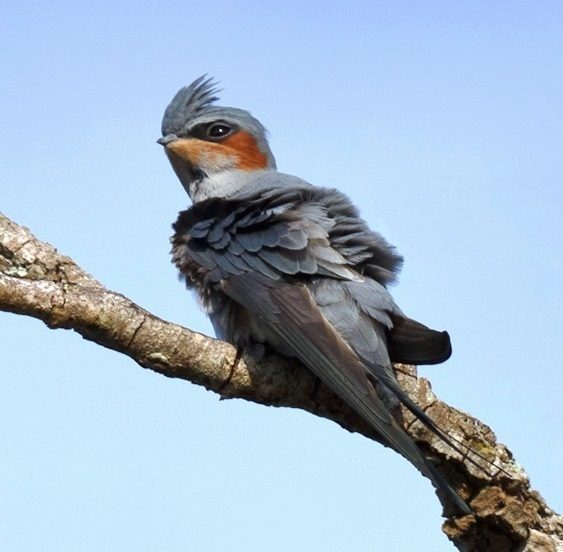

क्रेस्टेड ट्रीस्विफ्टCrested Treeswift
Hemiprocne coronata · Hemiprocnidae · BRD-0337

- Scientific name वैज्ञानिक नाम
- Hemiprocne coronata (Tickell, 1833)
- Family कुल
- Hemiprocnidae
- Hindi हिंदी
- क्रेस्टेड ट्रीस्विफ्ट
- Local names स्थानीय नाम
- crested treeswift, indian crested swift
- Status here यहाँ की स्थिति
- native
- Movement आवागमन
- Resident, here all year
- Known from कहाँ दर्ज
- Others have published records from the wider Awadh–Purvanchal plain, none yet from Basti–Ayodhya अवध–पूर्वांचल से दूसरों के प्रकाशित अभिलेख, बस्ती–अयोध्या से अभी नहीं
- IUCN IUCN
- LC
- Review समीक्षा
- not yet reviewed
When to look कब देखें
Present all year. साल भर मौजूद।
Tell it apart from इनसे अलग पहचानें
क्रेस्टेड ट्रीस्विफ्ट / Crested Treeswift
Hemiprocne coronata (Tickell, 1833) — Hemiprocnidae
क्रेस्टेड ट्रीस्विफ्ट — तराई के जंगलों और खुले वनों के ऊपर उड़ने वाला एक अत्यंत सुंदर, पतले पंखों वाला कलगीदार पक्षी है। आम अबाबीलों और स्विफ्ट्स के विपरीत इसके पैर मजबूत होते हैं और यह पेड़ों की सूखी, ऊंची डालियों पर बिल्कुल सीधा बैठकर आराम कर सकता है। इसके सिर पर एक पतली, खड़ी कलगी (क्रेस्ट) होती है और नर के गालों पर कत्थई-नारंगी रंग का खूबसूरत धब्बा होता है। इसकी पूंछ गहरी कांटेदार (फोर्क्ड) होती है। शाम के समय यह हवा में कलाबाजियां खाते हुए उड़ने वाले कीड़े और पतंगे पकड़ता है और तोते जैसी तेज चीख निकालता है।
Quick Identification त्वरित पहचान
| Feature | Description | |
|---|---|---|
| Habit | Slender, long-winged, tree-perching aerial hawker of forest canopies and glades | |
| Size | Medium-sized, elegant swift-like bird noticeably larger than a [[house_swift\ | House Swift]] |
| Crest | Long, erectile, pointed blue-grey crest held upright when perched | |
| Plumage | Silky bluish-ashy above with subtle greenish gloss; pale grey to white below | |
| Face | Adult male has rich chestnut-orange ear-coverts and throat sides; female grey | |
| Tail | Extremely long, deeply forked tail with slender, pointed outer streamers | |
| Perching | Regularly perches upright on exposed bare twigs, unlike true swifts |
Field tip: Look at high, exposed dead branches standing above forest clearings or riverbanks. Notice the upright perching posture with long wing-tips crossing well beyond the deeply forked tail, and the raised forward-pointing crest.
हिंदी:
यह एक सुराहीदार, लंबे पंखों वाला पक्षी है जो पेड़ों की सूखी फुनगियों पर सीधा बैठता है।
इसके सिर पर लंबी कलगी होती है और नर के गाल कत्थई रंग के होते हैं।
यह हवा में उड़ते हुए कीड़े पकड़ता है और इसकी पूंछ कैंची की तरह कटी हुई होती है।
Morphology आकारिकी
Measurements as given by Baker (1927):
| Measurement | Range |
|---|---|
| Wing | Wing 161 to 166 mm. (Baker 1927 as Hemiprocne coronata) |
The Crested Treeswift is an exceptionally elegant apodiform bird possessing remarkable plumage texture. In adult males, the lores and area below the eye are velvety black. The ear-coverts, cheeks, and sides of the throat are rich chestnut. The forehead bears an elongated, erectile crest of dark bluish-ashy feathers glossed with emerald green.
The upperparts, mantle, and back are soft bluish-grey, shading to darker glossy grey on the wing-coverts. The flight feathers and tail are dark blackish-brown glossed with green. The center of the throat, breast, and flanks are pale bluish-grey, fading into pure silky white on the abdomen and under tail-coverts.
Adult females lack the chestnut facial coloring, possessing dark grey ear-coverts separated from the cheek by a thin white line. The bill is small, broad-gaped, and black. The irises are dark brown with plumbeous eyelids. The feet are fleshy-brown (Baker 1927, p. 355).
Vocalisations. A loud, harsh, ringing screaming cry, somewhat resembling the screech of a small parakeet, uttered repeatedly both when perching and during wheeling aerial flights (Baker 1927, p. 355).
हिंदी:
इसके पंखों की लंबाई 161 से 166 मिमी होती है (बेकर 1927)।
नर के गालों पर कत्थई रंग होता है जबकि मादा का चेहरा धूसर होता है।
इसकी बोली तोते की तरह तेज और तीखी होती है जिसे यह उड़ते और बैठते दोनों समय निकालता है।
Behaviour & Ecology व्यवहार और पारिस्थितिकी
Hemiprocne coronata is strongly arboreal and aerial. It associates in small parties of a dozen to two dozen individuals, hawking for flying insects in buoyant, wheeling circuits over forest canopies, clearings, and river valleys (Baker 1927, p. 355).
Its flight is remarkably graceful and buoyant, resembling that of a swallow rather than the stiff, mechanical rushing flight of true swifts. It constantly perches on trees, sitting upright and holding its crest erect (Baker 1927, p. 355). At dusk, birds often gather closely together on high branches to roost.
हिंदी:
यह पक्षी जंगलों के ऊपर छोटी टोलियों में चक्कर काटता है (बेकर 1927)।
इसकी उड़ान अबाबील जैसी लचीली और सुंदर होती है।
शाम के समय यह पेड़ों की ऊंची डालियों पर एक-दूसरे से सटकर बैठता है।
Life Cycle / Phenology जीवन चक्र
Breeding occurs primarily during the hot pre-monsoon dry season, spanning March, April, and early May across its range (Baker 1927, p. 355).
The nest is a tiny pocket of tree bark flakes, feathers, and saliva, measuring only a few centimetres across and cemented directly against the side of a horizontal branch (Baker 1927, p. 355). It is disguised to appear as a natural tree knot. Only a single egg is laid, which completely fills the nest. The incubating hen sits across the branch, covering the egg with the hinder portion of the abdomen (Baker 1927, p. 355).
हिंदी:
इसका घोंसला बनाने का समय मार्च से मई के बीच होता है (बेकर 1927)।
यह पेड़ की छाल, पंखों और लार से शाखा के किनारे एक नन्हा सा प्याला बनाती है (बेकर 1927)।
इसमें केवल एक ही अंडा दिया जाता है जिसे मादा शाखा पर बैठकर अपने पेट के पिछले हिस्से से ढंकती है (बेकर 1927)।
Host Plants or Prey आहार
The Crested Treeswift is strictly an aerial insectivore (Baker 1927, p. 355):
- Hawking for flies, midges, etc. in circuits over forest canopies and clearings (Baker 1927, p. 355)
हिंदी:
यह हवा में उड़ते हुए मक्खियों और भुनगों का शिकार करता है (बेकर 1927)।
यह पेड़ों की फुनगियों और जंगलों के ऊपर उड़ते हुए भोजन पकड़ता है।
Predators / Natural Enemies शत्रु
No source opened for this atlas names a specific predator of this bird.
हिंदी:
इस एटलस के लिए खोले गए किसी स्रोत में इस पक्षी के किसी विशिष्ट शिकारी का नाम नहीं है।
Agricultural / Human Relevance कृषि प्रासंगिकता
The Crested Treeswift frequents forest clearings and woodland tracts (Baker 1927, p. 355). It is protected under the Wildlife (Protection) Act, 1972.
हिंदी:
यह जंगलों और वन सीमाओं के खुले स्थानों पर उड़ता है (बेकर 1927)। यह वन्यजीव (संरक्षण) अधिनियम, 1972 के तहत संरक्षित है।
Expected Locally स्थानीय रूप से अपेक्षित
Not a field record. Written from published accounts for eastern Uttar Pradesh. No confirmed local sighting yet — if you have seen it, that is what the atlas needs.
अभी तक स्थानीय पुष्टि नहीं। यह विवरण प्रकाशित स्रोतों से है, किसी अवलोकन से नहीं।
Search along high exposed dead branches overlooking riverbanks, sal forest glades, and savannah margins in the northern Terai.
GBIF holds published records from the wider Awadh–Purvanchal plain, none yet from Basti–Ayodhya.
A first record would be a photograph of the bird or an audio recording of its screeching call with place and date, sent through the About page.
Distribution वितरण
Global range: Resident across the Indian subcontinent and parts of mainland Southeast Asia, including India, Sri Lanka, Nepal, Myanmar, and Thailand.
In India: Distributed throughout peninsular and central India, extending along the sub-Himalayan tract from Dehra Dun to Assam.
In Uttar Pradesh: Recorded in the northern Terai districts of Lakhimpur Kheri and Balrampur.
In Basti district / eastern UP: No published records from Basti or Ayodhya; known in eastern UP from the forested sub-Himalayan tracts of the Terai.
हिंदी:
यह भारत, श्रीलंका, नेपाल और म्यांमार के वनों में विस्तृत रूप से पाया जाता है।
उत्तर प्रदेश में इसके रिकॉर्ड लखीमपुर खीरी और बलरामपुर के जंगलों से प्रकाशित हैं।
Research Questions शोध प्रश्न
- What are the specific horizontal branch diameter and tree species requirements for treeswift nest adhesion in the Terai? / तराई के जंगलों में घोंसला चिपकाने के लिए यह पक्षी किन पेड़ों और कितनी मोटी डालियों को चुनता है?
- How do seasonal emergences of winged termites influence evening foraging flock sizes over sal forest canopies? / साल के जंगलों में दीमकों के निकलने से शाम के समय ट्रीस्विफ्ट के झुंडों के आकार पर क्या असर पड़ता है?
- What is the composition of prey captured during high-noon versus dusk foraging flights?
- Are traditional communal roost branches used across successive years by the same resident parties?
- Can local birders identify nesting branches by observing parent changeover behavior without climbing or disturbing the tree? (A student can observe and sketch nest sites using binoculars from the ground.)
Similar Species मिलती-जुलती प्रजातियाँ
| Species | How to tell apart | हिंदी | |
|---|---|---|---|
| [[house_swift\ | House Swift]] (Apus affinis) | Much smaller, sooty-black plumage with bright white throat and conspicuous square white rump; cannot perch on branches; blunt tail | अबाबील |
| [[asian_palm_swift\ | Asian Palm Swift]] (Cypsiurus balasiensis) | Tiny, uniform dull grey-brown plumage with slender curved wings; lacks crest and chestnut cheeks; strictly associated with palm fronds | ताड़-चट्री |
Field rule: The erect pointed crest, long deeply forked tail, silky blue-grey body, chestnut cheeks in males, and unique habit of perching upright on bare branches distinguish the Crested Treeswift.
हिंदी:
अबाबील का शरीर काला और कमर सफेद होती है तथा वह पेड़ पर नहीं बैठ सकती; क्रेस्टेड ट्रीस्विफ्ट के सिर पर कलगी होती है और यह डाल पर सीधा बैठता है।
Taxonomy & Classification वर्गीकरण
Original description. Described by Samuel Richard Tickell in 1833 in the Journal of the Asiatic Society of Bengal (vol. 2, p. 580), under the basionym Hirundo coronata. The type locality is Borabhum, Bengal.
Synonyms and historical names. Stuart Baker (1927, p. 354) treated the species under Hemiprocne coronata, noting its former placement in Macropteryx.
Subspecies. Monotypic; no subspecies are recognised across its continental range.
Family and order placement. Order Apodiformes (swifts and hummingbirds); family Hemiprocnidae (treeswifts); genus Hemiprocne.
IUCN status rationale. Evaluated as Least Concern (LC) by the IUCN Red List due to its extremely vast range and stable population trends.
हिंदी:
सैमुअल रिचर्ड टिकल ने 1833 में इसका वर्णन किया था। यह हेमीप्रोकनिडी कुल का सदस्य है और संकटमुक्त (LC) है।
Photo Gallery फोटो गैलरी
No photos yet — add field photos to media/species/crested_treeswift/ and run node scripts/sync_photos.js.
Photos needed आवश्यक फोटो
- [ ] Adult perched upright on bare branch showing crest and long wings (डाल पर सीधा बैठा वयस्क)
- [ ] Male in profile showing rich chestnut ear-coverts (नर के चेहरे का कत्थई धब्बा)
References संदर्भ
- Tickell, S. R. (1833). Descriptions of New Species of Birds. Journal of the Asiatic Society of Bengal, vol. 2, p. 580 (as Hirundo coronata).
- Baker, E. C. S. (1927). The Fauna of British India, Including Ceylon and Burma. Birds. Vol. 4. Taylor & Francis, London, p. 354 (as Hemiprocne coronata).
- Ali, S. & Ripley, S. D. (1987). Compact Handbook of the Birds of India and Pakistan. Oxford University Press, New Delhi.
- Grimmett, R., Inskipp, C. & Inskipp, T. (2011). Birds of the Indian Subcontinent. 2nd ed. Christopher Helm, London.
- BirdLife International (2018). Hemiprocne coronata. The IUCN Red List of Threatened Species 2018: e.T22686891A130112154. doi:10.2305/iucn.uk.2018-2.rlts.t22686891a130112154.en
- GBIF Occurrence Data — Hemiprocne coronata, India (2025).
Source file: species/fauna/birds/crested_treeswift.md